RISC vs CISC — 두 가지 CPU 철학
RISC (Reduced Instruction Set Computer) = ARM 진영. 단순한 명령어를 조합하여 빠르고 효율적으로 처리. 저전력, 낮은 발열이 강점.
CISC (Complex Instruction Set Computer) = Intel·AMD의 x86 진영. 복잡한 명령어를 한 번에 처리. 정교한 연산에 유리하나 전력 소모가 높음.
비유하면 RISC는 "한 걸음 앞으로, 한 걸음 왼쪽"처럼 단순 동작을 조합하는 방식이고, CISC는 "세 걸음 앞으로 가면서 대각선으로 두 걸음"처럼 복합 동작을 하나의 명령어로 수행하는 방식이다.
에이전틱 AI 시대: CPU 수요의 구조적 증가
GPU 투자가 줄어드는 것이 아니다. GPU/XPU 랙은 여전히 가장 큰 dollar share를 차지하고 투자는 계속 증가한다. 핵심은 CPU가 과소투자되어 있으며, 에이전틱 워크로드가 "추가적인" CPU 수요를 폭발시킨다는 것이다. CPU:GPU 비율이 1:1 수준으로 회귀할 전망. Futurum Research
AI 시장이 LLM 학습(training)에서 에이전틱 AI 추론(inference)으로 넘어가고 있다. AI 에이전트가 API를 호출하고, 코드를 실행하고, 도구를 조합하는 작업은 GPU가 아니라 CPU가 처리한다.
가속기(GPU)는 토큰을 생성하지만, 그 토큰의 관리·스케줄링·라우팅·워크플로 실행은 CPU의 몫이다.
사용자당 생성되는 토큰 수가 15배 이상 증가할 수 있다. 에이전트는 사람보다 훨씬 빠르게 요청을 생성하고 24시간 내내 작동하기 때문이다.
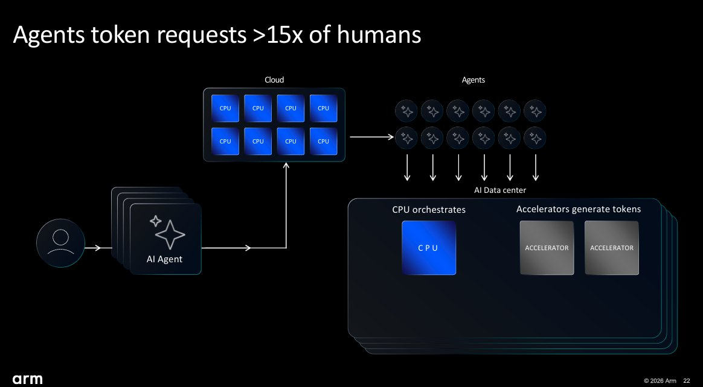
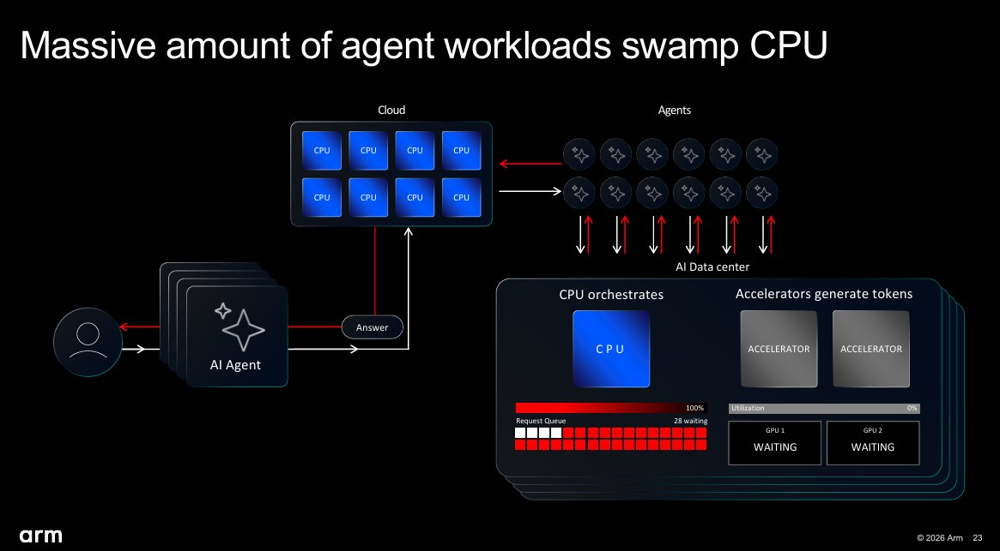
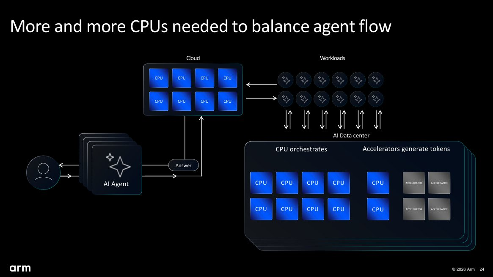
데이터센터 1GW당 약 3,000만 코어 → 약 1억 2,000만 코어.
같은 전력 예산 안에 CPU 코어를 4배 더 넣어야 하는 상황.
실제로 벌어지고 있는 일 (SemiAnalysis / Daytona 기반)
GitHub 불안정성 심화: Microsoft가 여유 CPU를 외부 AI 랩(Anthropic, OpenAI 등)에 판매하면서 자체 서비스용 CPU 부족 → 커밋 실패율, 다운타임 급증.
코드 에이전트 매출: 최근 6개월간 수십억 달러에서 $10B 이상으로 급증. 54개의 코덱이 6~7시간 연속 작동하며 DB 호출, 크론 서버, 웹 스크래핑 등 CPU 집약적 작업 수행.
Amazon CPU 서버 설치량 전년 대비 3배 증가. SemiAnalysis / The Register Intel과 AMD 모두 완전 매진 상태로, 가격 인상 공지를 고객에게 발송하며 더 이상 서로 경쟁하지 않고 생산량 확보에 집중.
OpenAI: x86 전용 스택에서 ARM으로 전체 코드베이스를 포팅 — 다른 곳에 CPU 용량이 전혀 없었음을 시사.
GPU vs CPU: 공존의 논리
"V6 엔진을 V8로 업그레이드하는데 타이어와 스티어링 휠이 더 이상 필요 없다는 것과 같다" — CPU의 역할은 없어지지 않는다.
학습(training)은 교사, 추론(inference)은 학생. 우주에는 학생이 교사보다 훨씬 많으므로 추론 워크로드가 학습보다 훨씬 많을 것이다.
엣지 디바이스(웨어러블, AR 헤드셋 등)에서의 추론: 100W GPU를 탑재하는 것은 물리적으로 불가능하므로 CPU가 핵심 역할을 담당한다.
DPU: AI 인프라의 또 다른 ARM CPU 수혜처
DPU(Data Processing Unit)는 스토리지, 보안, 네트워크 기능을 CPU와 분담하여 처리하는 비메모리 반도체다. DPU를 뜯어보면 일부 보안/네트워크 기능은 ASIC 형태로 들어가 있지만, 중심은 CPU인 것을 알 수 있다.
BlueField-4의 핵심 변화: CPU가 BF-3의 16코어 Cortex-A78(Armv8.2+)에서 BF-4의 64코어 Grace CPU(Arm Neoverse V2 기반)로 대폭 업그레이드되었다. 컴퓨트 성능이 BF-3 대비 6배로 증가했으며, PCIe도 Gen5→Gen6로 업그레이드. Nvidia Blog
DPU는 Intel, AMD, Nvidia 등 다양한 기업들이 만들고 있지만, Nvidia가 자사 제품들을 랙스케일 단위로 판매하면서 출하량이 빠르게 증가하고 있다. Nvidia DPU의 경우 ARM CPU가 핵심이다.
AI Agent 시대의 DPU: AI Agent 시대 대비를 위해 루빈과 함께 출시되는 BlueField-4 DPU는 증가하는 KV Cache 관련 워크로드를 처리하기 위해 코어 수가 4배 더 증가했다. DPU 성능 증가 요구는 곧 CPU 수혜로 이어지며, ARM이 이 영역에서도 구조적 수혜를 받을 것으로 기대된다.
| 항목 | BlueField-3 DPU | BlueField-4 DPU | BF-4 개선점 |
|---|---|---|---|
| 네트워크 속도 | 최대 400 Gb/s (Ethernet 또는 InfiniBand NDR) | 최대 800 Gb/s (Ethernet 또는 InfiniBand) | 2배 (ConnectX-7 → ConnectX-9 기반) |
| CPU 코어 | 최대 16코어 ARM Cortex-A78 (ARMv8.2+) | 64코어 Grace CPU (ARM Neoverse V2 기반) | 4배 코어 수 + 아키텍처 업그레이드 |
| 컴퓨트 성능 | BlueField-2 대비 4배 | BlueField-3 대비 6배 | Grace CPU로 대폭 향상 |
| 메모리 | 16GB DDR5 | 128GB LPDDR5X | 8배 |
| PCIe 인터페이스 | PCIe Gen5 x16 | PCIe Gen6 x16 | Gen6로 업그레이드 |
| 하드웨어 가속기 | RegEx, AES-XTS/GCM, Erasure Coding, NVMe-oF, MACsec 등 | 기존 + 강화된 KV I/O, 암호화·CRC 가속 (800 Gb/s 라인레이트) | AI·스토리지 특화 강화 (ICMS에 최적) |
출처: Nvidia 공식 발표 기반 재구성. Nvidia Blog
ARM vs x86: 데이터센터 효율성 비교
ARM 기반 서버 CPU가 x86 대비 에너지 효율에서 구조적 우위를 보이고 있다. 이는 RISC 아키텍처의 근본적 설계 차이에서 기인하며, 서버 랙 단위로 누적되면 OPEX와 밀도에서 유의미한 차이로 이어진다.
| 핵심 지표 | Intel/AMD 서버 (x86) | ARM 서버 | 핵심 체크포인트 (TCO/효과) |
|---|---|---|---|
| 소모 전력 (TDP) | CPU당 300~500W | CPU당 150~300W | 전기 요금(OPEX) 약 30~40% 절감. 냉각 설비 가동률 동반 하락. |
| 상면 공간 (Rack Density) | 높은 발열로 랙당 장착 대수 제한 (2U 폼팩터 일반적) | 단일 CPU에 128~192코어 고집적, 저발열 (1U 가능) | 동일 공간 대비 처리량 극대화. ARM AGI CPU 기준 36kW 랙에 8,160코어. |
| 전력 대비 성능 (Perf/Watt) | 기준 (1x) | 1.3x~2x | 클라우드 네이티브 워크로드에서 ARM이 와트당 30~40% 우위. 대규모 데이터 전처리에서는 최대 2배. |
| 단일 스레드 성능 | 여전히 15~25% 우위 | 격차 급격히 축소 중 | x86이 아직 높은 클럭·캐시로 싱글 스레드 우위. 그러나 에이전틱 워크로드는 멀티스레드가 핵심. |
| 소프트웨어 생태계 | 40년+ 레거시 호환성 | 급속 성장 중 (AWS 상위 1,000 고객 98% ARM 사용) | x86의 최대 장점. 그러나 컨테이너/K8s 환경에서는 ARM 전환 마찰 최소화. |
| 서버 시장 점유율 (2025) | 약 79% (IDC) | 약 21% (YoY +70% 성장) | ARM이 2026년까지 25%, 2028년까지 30%+ 전망. x86 독점 구조가 깨지는 구간. |
출처: IDC 서버 시장 데이터 (2025), ARM 공식 발표, AWS Graviton 벤치마크, Signal65 분석. "2x performance per rack" 주장은 ARM 자체 추정치(에어쿨링 기준)로, 독립 검증 필요. ARM Newsroom Signal65 36Kr
왜 ARM이 더 효율적인가: x86은 CISC 설계 철학(고성능 중심)으로 수십 년간 레거시 호환성을 유지하면서 회로가 복잡해졌다. 트랜지스터의 상당 부분이 "쓰이지 않는 레거시 명령어 디코딩"에 소비된다. ARM은 RISC 설계 철학(고효율 중심)으로 출발했고, 레거시 지원 부분을 과감히 제거하여 전력 효율을 극대화했다. 이 차이가 서버 랙 단위로 누적되면 동일 전력 예산에서 ARM이 더 많은 코어를 가동할 수 있다.
실제 사례:
• Pinterest: Graviton 마이그레이션으로 추천 엔진 처리량 40% 증가, 인프라 비용 연 $8M 절감. sanj.dev
• F1 (Formula 1): AWS HPC에서 CFD 시뮬레이션 처리 20% 향상, 시뮬레이션 비용 35% 절감, 에너지 소비 45% 감소. sanj.dev
• AWS 전체: 2년 연속 신규 CPU 용량의 50% 이상을 Graviton으로 추가. 상위 1,000 EC2 고객 중 98%가 사용. Signal65
CPU 중심 TAM 전망 (FY31 기준)
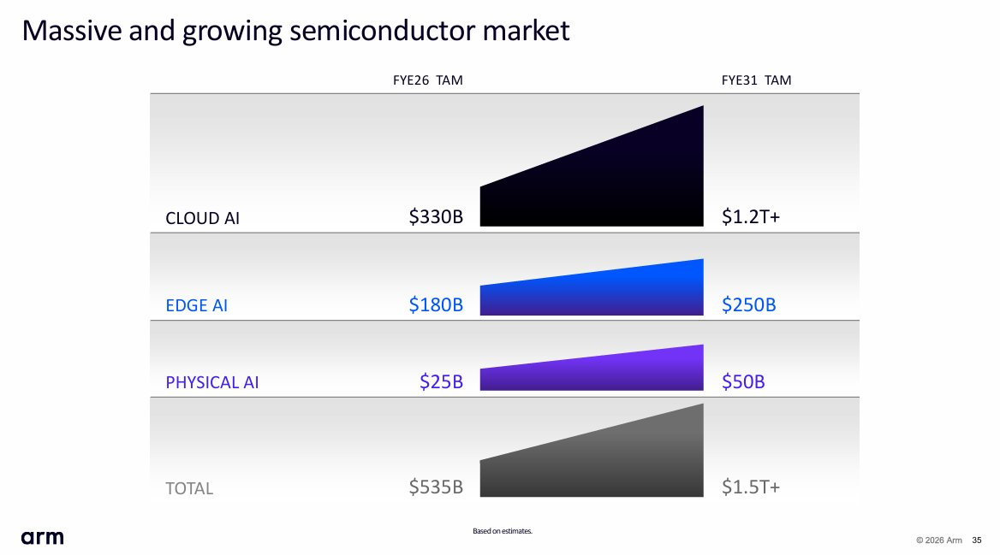
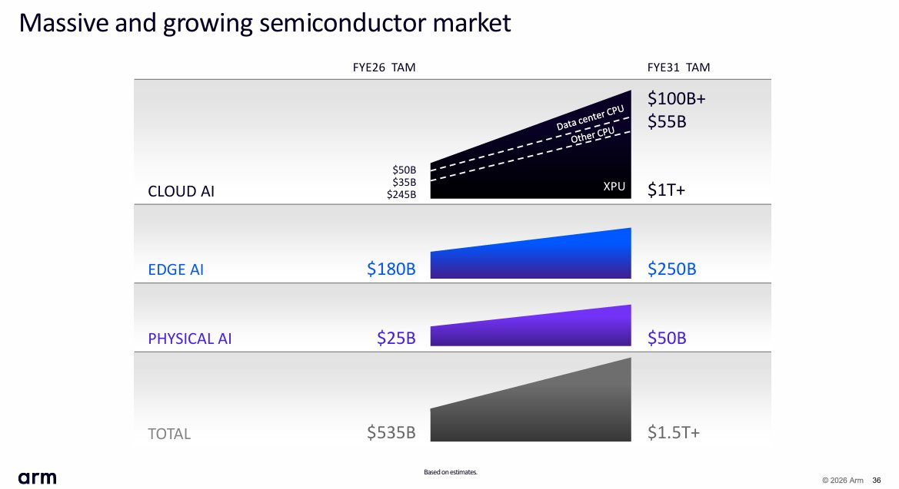
Acquired 팟캐스트 (Rene Haas CEO 인터뷰) 및 자체 리서치 기반 정리
Acorn Computers에서 출발 — ARM 창립
1983년 영국 케임브리지의 Acorn Computers가 자체 RISC 프로세서 프로젝트(Acorn RISC Machine)를 시작한 것이 ARM의 기원이다. 1990년부터 본격적으로 자체 프로세서 설계에 착수하던 시점, Acorn이 재정난에 빠지면서 Apple·VLSI Technology와 공동 설계 체제로 전환하게 되었고, 이 과정에서 Advanced RISC Machines Limited라는 독립 법인으로 분사되었다. Apple이 이 합작사에 투자하며 초기 자본을 확보했고, 이후 1998년 ARM Limited로 사명을 축소함과 동시에 런던·나스닥 동시 상장으로 처음 기업 공개(IPO)를 단행하며 현재의 ARM이 되었다.
첫 제품은 Apple Newton(PDA)용 프로세서. 배터리 구동 → 저전력 설계 필수, 비용 절감 → 플라스틱 패키지. 기존 x86·68000 등이 수직 통합(자체 설계+제조)이었던 반면, ARM은 업계 최초로 라이선스 모델을 채택.
TI + 노키아 — 첫 번째 대규모 디자인 승리
TI의 2G GSM 베이스밴드 칩에 ARM CPU 탑재 → 최종 고객은 노키아. PC 시장을 직접 공략하지 않고 틈새시장에서 출발하여 표준이 된 패턴 (TSMC 여정과 유사).
iPod — Apple과의 두 번째 인연
첫 번째 아이팟에 ARM 기반 프로세서 사용. 토시바 하드 드라이브, 디스플레이, 엄지 휠을 갖춘 "작은 컴퓨터".
iPhone — ARM vs Intel Atom, 결정적 순간
Apple 내부 논쟁: Intel Atom(x86) vs ARM. iPod 팀이 승리하여 ARM 기반 iOS 채택. 이후 안드로이드 생태계가 ARM을 채택하며 2007~2008년 ARM이 모바일 사실상 표준으로 확립.
SoftBank, ARM을 $32B에 인수
상장 폐지 후 비공개 회사로 전환.
Nvidia, ARM 인수 시도 ($40B) — 규제 반대로 실패
규제 기관, 고객, 생태계 파트너가 강력히 반대. 이는 ARM이 단순히 한 기업의 자산이 아니라 산업 전체의 핵심 인프라임을 역설적으로 증명. 수직 합병이었으나 장기적 경쟁 저해 우려로 차단.
ARM, NASDAQ 재상장
IPO 가격 $51, 시가총액 약 $54B으로 시작.
SoftBank, Ampere Computing 인수 발표 ($6.5B)
2025년 11월 완료. ARM에 두 번째 칩 설계팀 확보.
ARM AGI CPU 공개 — 35년 역사상 첫 자체 칩
136코어, TSMC N3P, Meta 첫 고객. "반도체의 스위스" 중립성을 포기한 역사적 전환.
라이선스 + 로열티 구조
ARM은 35년간 칩을 직접 만든 적이 없었다. 설계도(IP)를 만들어 라이선스료를 받고, 파트너가 그 설계로 칩을 만들어 출하할 때마다 로열티를 받는 구조였다.
두 가지 라이선스 유형:
(1) ARM 설계 코어 라이선스 — ARM이 설계한 코어(Cortex, Neoverse 등)를 그대로 사용. 삼성, MediaTek 등이 이 방식.
(2) 아키텍처 라이선스 — ISA만 라이선스하고 자체 CPU 구현체를 설계. Apple, Nvidia(Olympus 코어), Qualcomm이 이 방식. 로열티율이 훨씬 낮음(약 1% 전후).
매출 구조와 고객 집중도
Top 5 고객(Apple, Qualcomm, MediaTek, Samsung, ARM China)이 매출의 약 60% 차지. 이 중 ARM China가 약 24%.
ARM China는 실질적으로 독립적인 회사(ARM 지분 4.8%)로, ARM의 중국 지역 서브라이선싱을 담당한다. 미중 갈등 때마다 리스크 요인으로 부각된다.
Apple은 ISA 라이선스만 사용하여 자체 설계를 하므로, 엄청난 물량에도 ARM 매출 비중은 한 자릿수에 불과하다.
로열티율의 구조적 상승
ARM v9 채택 확대로 로열티율이 구조적으로 상승하고 있다. 데이터센터와 하이엔드 스마트폰 시장은 v9 전환이 거의 완료되었다.
기존 v8 시대 로열티율 약 1% → v9 도입 후 3~5%까지 상승. 설계 완제품(CSS) 형태의 경우 최대 10%까지 가능하다.
전략적 전환: 스마트폰에서 데이터센터로
CEO Rene Haas는 Arm이 스마트폰 중심 이미지에서 탈피하여 클라우드·데이터센터 비즈니스로 중심축을 이동 중이라고 밝혔다. 향후 수 년 내 데이터센터 부문이 Arm 최대 사업부로 부상할 전망이며, 5년 후에는 스마트폰 부문 대비 수십 배(order of magnitude) 규모로 확대될 것으로 예상. Bloomberg Technology
압도적 스케일: Arm 기반 칩 누적 출하량은 3,500억 개로, 인류 역사상 존재했던 총 인구 1,170억 명의 3배에 달하는 수치. 수십억 대의 기기를 뒷받침하는 기술을 관리한다는 것 자체가 거대한 책임.
소프트뱅크의 장기 확신: 손정의 회장은 상장 이후 단 한 주도 매도하지 않았으며, Arm의 장기 잠재력에 극도의 확신을 보유. 90% 지분을 가진 장기 주주 덕분에 분기 실적 압박 없이 장기 전략에 집중할 수 있는 구조적 이점 확보. 실제로 상장 이후 거의 매 분기 가이던스를 상회하거나 충족.
ARM ISA 버전별 개요
ARM의 명령어 세트 아키텍처(ISA)는 세대를 거듭하며 진화해왔다. 현재 v9가 최신이며, AI 연산과 보안 기능이 핵심 강화 포인트다.
| 구분 | 설명 | 세부 제품 |
|---|---|---|
| System IP | SoC 내부 연결 및 제어 관련 IP 툴. CPU 코어 간 상호 연결, 시스템 컨트롤러, 디버그/트레이스 등 IP 포트폴리오. | CMN(Coherent Mesh Network), NI(Network Interconnect), GIC(인터럽트 컨트롤러) |
| Security IP | SoC 보안 관련 IP. 암호화/키 관리, 물리 공격 방어 등. | CryptoCell, TrustZone(하드웨어 격리, 루트 오브 트러스트), PSA 아키텍처 기반 4단계 접근(분석→아키텍처→구현→인증) |
| Subsystems IP (CSS) | 사전 통합 컴퓨트 서브시스템. CPU + 인터커넥트 + 시스템 IP를 미리 조립한 형태. 거의 추가 설계가 필요 없는 완제품 상태. 최근 ARM 매출의 핵심 성장 동력. | Neoverse CSS: 데이터센터 용 Lumex CSS: 스마트폰/노트북 용 Zena CSS: 자동차 SDV 용 |
출처: ARM 공식 제품 페이지 기반 재구성
ARM IP 제품 라인업
ARM은 CPU뿐 아니라 GPU, NPU, System IP까지 광범위한 제품군을 보유하고 있다. 2025년에는 기존 Cortex-X/A 라인을 통합한 새로운 C1 CPU 라인업이 출시되었다.
| IP 종류 | 설명 | 비고 | 주요 고객 / 납품처 |
|---|---|---|---|
| Cortex-X | 모바일/클라이언트 최고 성능 플래그십 라인업 | → C1-Ultra로 통합 예정 | Samsung Exynos, MediaTek Dimensity 플래그십, Google Tensor |
| Cortex-A | 모바일/임베디드 범용 라인업 | → C1 라인업으로 통합 예정 | Samsung, MediaTek, Qualcomm(미드레인지), Unisoc, 대부분의 Android 기기 |
| Cortex-R | 실시간 처리 중심. 지연 최소화 + 안정성 필수. | 자동차 ECU, 산업용 | Renesas, NXP, Texas Instruments, Bosch, Continental 등 자동차 Tier 1 |
| Cortex-M | 임베디드 마이크로컨트롤러(MCU). 초저전력 + 결정론적 실시간 처리. | IoT, 센서, 웨어러블 | STMicroelectronics, NXP, Nordic Semi, Infineon, Microchip — 연간 수십억 개 출하 |
| C1 CPU 라인업 2025 신규 |
Cortex-X와 Cortex-A를 대체하는 새로운 통합 CPU 제품군. ARMv9.3-A 기반. 온디바이스 AI 성능 향상 + 전력 효율 추구. | C1-Ultra(플래그십), C1-Premium(서브 플래그십), C1-Pro(미들급), C1-Nano(고효율) | Samsung Galaxy S26/Z Flip 8, Oppo Find X9 Pro, Xiaomi 15 Ultra, Vivo X200 Pro 등 2026 플래그십에 탑재 예정 (Exynos/MediaTek 칩셋 경유). TechBoltX |
| Neoverse | 데이터센터/서버 전용 CPU 라인업. 클라우드와 엣지 컴퓨팅에 최적화. | N3: 하이퍼스케일/5G 용도 V3: 최고 싱글 스레드, AI/HPC 용도 AGI CPU의 핵심 |
V 시리즈: AWS Graviton 3/4/5, Google Axion, Nvidia Grace/Vera, ARM AGI CPU N 시리즈: Microsoft Cobalt 100/200, Alibaba Yitian 710, Ampere Altra ARM Newsroom |
| Ethos NPU | 온디바이스 AI 처리에 중점을 둔 AI/ML 전용 가속기 | 4TOPS~8TOPS 등 다양한 스케일 | Samsung, MediaTek 등 모바일 SoC에 통합. 스마트 카메라, 음성인식 엣지 디바이스 |
| Mali GPU | ARM의 GPU IP 라인업 | → G1-Ultra(하이엔드) + Mali(메인스트림). Immortalis 브랜드 폐지 | Samsung Exynos, MediaTek Dimensity, Google Tensor. Qualcomm은 자체 Adreno GPU 사용 |
출처: ARM 공식 제품 페이지 및 도쿄 IR 브리핑 기반 재구성. 고객 정보는 공개 발표 기준.
CSS(Compute Subsystem)가 중요한 이유
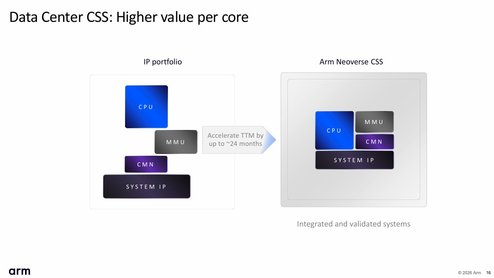
CSS는 CPU + 인터커넥트 + 시스템 IP를 미리 조립한 "거의 완제품" 형태다. 고객은 차별화 영역(카메라 ISP, 가속기 등)에만 집중하면 되므로 엔지니어링 시간을 3~9개월 절감할 수 있다.
ARM은 TSMC·삼성 등과 협력하여 특정 파운드리 공정에서 주파수 출력까지 보장하는 수준의 완성도를 제공한다. 첫 CSS 고객은 80 man-year의 엔지니어링 비용을 절감했고, 또 다른 고객은 CSS 인수부터 생산 실리콘 확보까지 18개월 미만이 소요되었다. 도쿄 IR 브리핑
로열티 구조: v8 → v9로 2배, v9 → CSS로 추가 2배. CSS는 세대별로 약 20%씩 추가 상승하며, 매년 신세대 출시로 연 20%의 구조적 로열티 인상이 가능하다.
서버 CPU 시장의 전체 경쟁 지형
"AI 인프라에서 GPU 옆에 어떤 CPU를 놓을 것인가"의 싸움:
x86: Intel (Xeon, Clearwater Forest 준비 중), AMD (EPYC Turin)
ARM 기반: Nvidia Vera, ARM AGI CPU, AWS Graviton (5세대, 192 Neoverse V3 코어), Google Axion (Neoverse N3), Microsoft Cobalt 200 (CSS V3)
기타: RISC-V (Tenstorrent 등 부상 중)
Bank of America는 서버 CPU 시장이 2025년 $27B → 2030년 $60B로 성장 전망. CNBC
서버 CPU 4파전: 스펙·효율·밀도 비교 대시보드
| 항목 | Intel Xeon 6980P Granite Rapids |
AMD EPYC 9965 Turin Dense |
Nvidia Vera Olympus (ARM) |
AWS Graviton4 Neoverse V2 |
ARM AGI CPU Neoverse V3 |
|---|---|---|---|---|---|
| 아키텍처 | x86 (Redwood Cove) | x86 (Zen 5C) | ARM v9.2-A (커스텀) | ARM v9 (Neoverse V2) | ARM v9.2-A (Neoverse V3) |
| 공정 | Intel 3 | TSMC N4 | 비공개 (N3P 추정) | TSMC N4 | TSMC N3P |
| 코어 수 | 128 | 192 | 88 | 96 | 136 |
| Thread 수 | 256 (HT) | 384 (SMT) | 176 (Spatial MT) | N/A (1T/core) | 136 (1T/core) |
| TDP | 500W | 500W | 비공개 (약 350W 추정) | 비공개 | 300W (250~430W) |
| 메모리 대역폭 | 845 GB/s | 614 GB/s | 1,200 GB/s | 538 GB/s | 800+ GB/s |
| 코어당 대역폭 | 6.6 GB/s | 3.2 GB/s | 약 14 GB/s | 5.6 GB/s | 6 GB/s |
| 대표 I/O | PCIe 5.0 (378 GB/s) | PCIe 5.0 (504 GB/s) | NVLink-C2C (1.8 TB/s) | PCIe 5.0 (378 GB/s) | PCIe Gen6, CXL 3.0 |
| 메모리 타입 | DDR5 MCR DIMM | DDR5 6000MT/s | SOCAMM LPDDR5X | DDR5 | DDR5 8800MT/s |
| 코어/와트 | 0.26 | 0.38 | 약 0.40 | N/A | 0.45 |
| 36kW 랙 코어 | 약 4,352 | 약 6,528 | 3,168 (NVL72) | N/A (AWS 전용) | 8,160 |
| 설계 철학 | 범용 고성능 | 코어 수 극대화 | 코어당 BW 극대화 | 클라우드 범용 효율 | 코어 밀도·에너지 효율 |
| 주요 고객 | Google, 엔터프라이즈 | Meta, AWS, 범용 | CoreWeave, 네오클라우드 | AWS EC2 전용 | Meta, Cerebras, SAP |
| 가격 | $17,800 | $14,813 | 번들 | AWS 내부용 | 미공개 |
Vera는 코어 수보다 코어당 대역폭(14GB/s, 타 CPU 대비 약 3배)에 집중. SOCAMM LPDDR5X로 기존 DDR5 대비 대역폭 극대화. 출처: Intel, AMD, Nvidia, ARM 공식 발표 종합.
2026년 기준 데이터센터 서버 CPU 주요 4개 제품의 핵심 스펙 비교. 동일 전력 예산(36kW 표준 랙) 기준 코어 밀도가 투자 판단의 핵심 변수.
Performance / Watt (코어/W)
36kW 랙 코어 밀도 (x86 Xeon 대비)
기존 라이선시와의 긴장 관계
ARM vs Qualcomm: Nuvia 인수 건 라이선스 분쟁 진행 중, ARM이 Qualcomm 아키텍처 라이선스 취소 통보.
Nvidia: 4Q25에 잔여 ARM 지분 110만 주(약 $140M) 전량 매각(2026.02 SEC 공시). 다만 20년 라이선스 계약은 유지되며 Grace/Vera CPU 모두 ARM 아키텍처 기반을 유지. Jensen Huang은 "수십 년간 라이선시로서 ARM을 지원하겠다"고 발언. $140M은 Nvidia 시가총액 $4.58T 대비 사실상 무의미한 규모로, 관계 악화보다는 포트폴리오 재배분으로 해석. CNBC Tom's Hardware
Qualcomm: 2025년 말 RISC-V 고성능 코어 설계사 Ventana Micro Systems 인수 — ARM 의존도 축소 포석.
무슨 일이 벌어지고 있나
첫째, SoftBank(ARM 모회사)가 Ampere Computing을 $6.5B에 인수 (2025년 11월 완료) Bloomberg. Ampere는 ARM 기반 서버 CPU 설계·판매 회사로, ARM에 두 번째 칩 설계팀을 확보하려는 전략으로 해석된다.
둘째, ARM이 2026년 3월 24일 "ARM AGI CPU"를 공개. 36년 역사상 처음으로 자체 칩을 직접 만들어 판매하겠다고 발표. 첫 고객은 Meta, OpenAI·Cerebras·Cloudflare·SAP 등 50개 이상 기업이 파트너로 참여. ARM Newsroom
ARM AGI CPU 상세 스펙
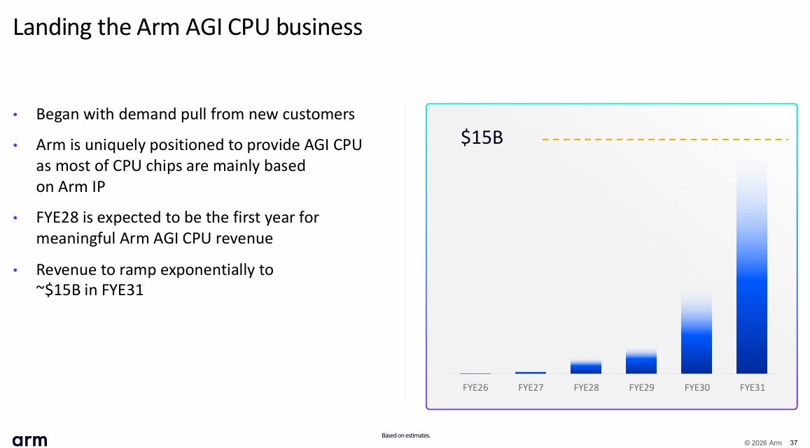
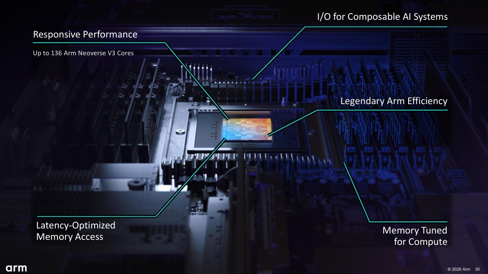
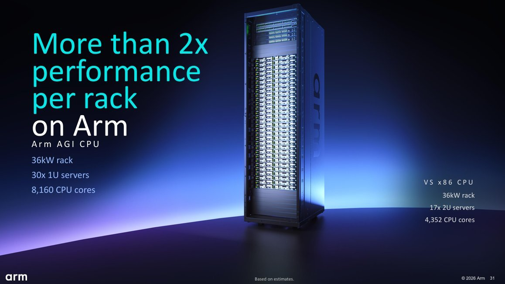
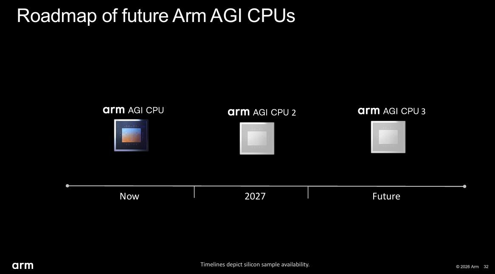
ARM의 논리: 왜 이 선택을 했나
기존 라이선스 모델의 한계: 칩 가격의 1~2% 로열티로는 AI 인프라 투자 붐에서 나오는 가치의 극히 일부만 가져간다.
CEO Rene Haas는 AGI CPU 단독으로 2031년까지 연 $15B 매출을 전망하며 HPCwire, 회사 전체 매출을 $25B까지 끌어올리겠다고 발표. FY2025 전체 매출이 $4.0B인 점 감안하면, 라이선스 모델만으로는 불가능한 성장 규모다.
제품 로드맵: 1세대 AGI CPU 발표 완료. 2세대는 이미 완성 단계로 약 1년 내 출시 예정, 3세대 개발도 착수. FY31까지 3개 세대가 동시에 램프되면서 exponential한 매출 성장을 견인할 계획.
또한 Meta 같은 하이퍼스케일러는 자체 칩 설계에 엔지니어 1,000명, $500M 예산이 필요한데, 그런 자원이 없는 기업들에게 ARM이 "기성품 ARM CPU"를 제공한다는 포지셔닝.
CEO 인터뷰: 출시 후 반응과 고객 수요
Haas는 현재 데이터센터 시장이 "심각하게 서비스가 부족한(severely underserved) 상태"라고 진단하며, 고객사들이 직접 "칩을 만들어달라"고 요청하는 수요가 폭발적으로 증가하고 있다고 밝혔다. Bloomberg Technology
에이전틱 AI(Agentic AI)가 CPU 수요를 4배로 확대시키는 핵심 동력으로 작용하고 있으며, 이러한 배경에서 Arm은 35년 역사상 처음으로 자체 칩·CPU 설계에 나서는 전략적 전환을 결정.
첫 번째 제품인 AGI CPU는 Meta, SAP, Cloudflare, OpenAI, Cisco 등에 공급 중이며, 출시 이후 수요가 매우 강력하게 나타나고 있다고 강조. 이미 실제 고객을 확보한 현 시점이 "레벨 0의 승리"이며, 앞으로 Arm이 주소할 수 있는 기회의 폭이 극적으로 확대될 것이라고 언급.
Vera CPU Rack 구성
1/2 SuperPod 내 랙 구성 (DGX Vera Rubin)
ARM FY 기준 (3월 결산). 단위: $M. 2Q22~4Q25 분기별 추이.

매출 성장: FY2025 연간 $4.0B(YoY +24%). 사상 최초 분기 $1B 돌파(4Q25 $1,242M). 다만 YoY 성장률은 33.7%(1Q25) → 26.3%(4Q25)으로 둔화 추세.
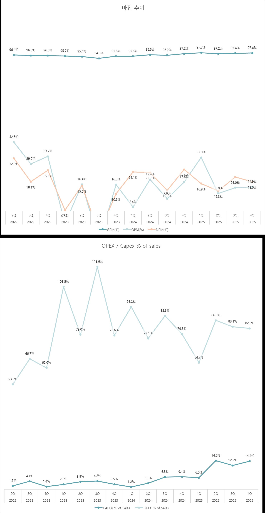
마진 구조: GPM 97%대로 업계 최고 수준 유지. 다만 AGI CPU 직접 판매가 본격화되면 칩 매출의 GM은 40~50% 수준이므로 블렌디드 마진 하락 불가피.
CAPEX 급등: FY2025 들어 CAPEX % of Sales가 6%→14%대로 급등. 칩 직접 제조를 위한 선행 투자 반영.
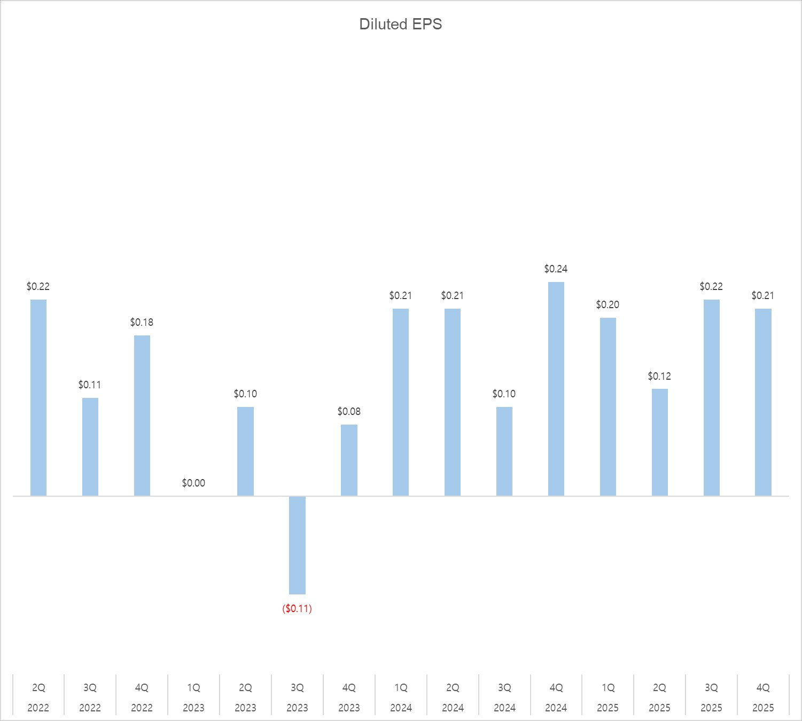
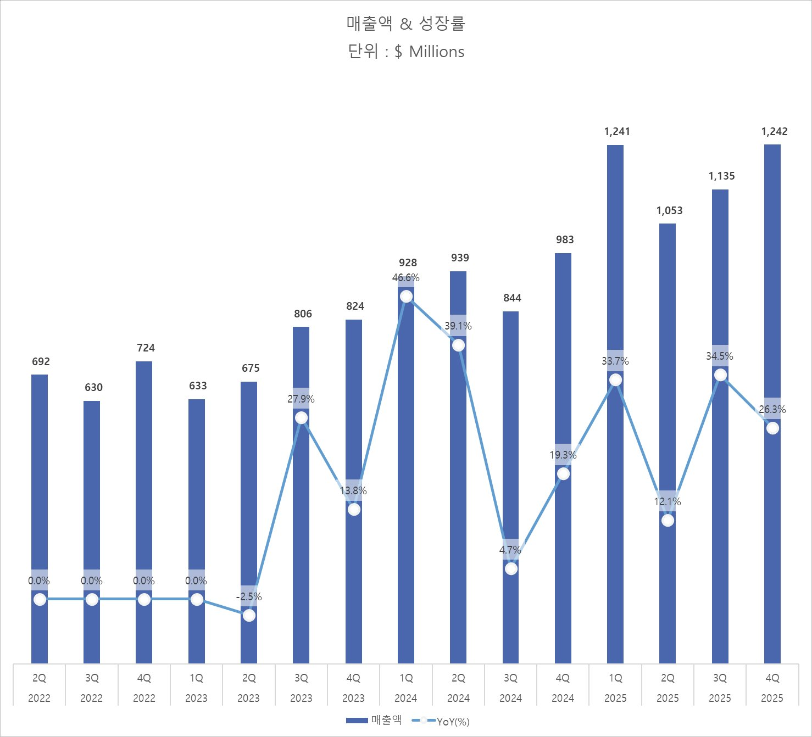


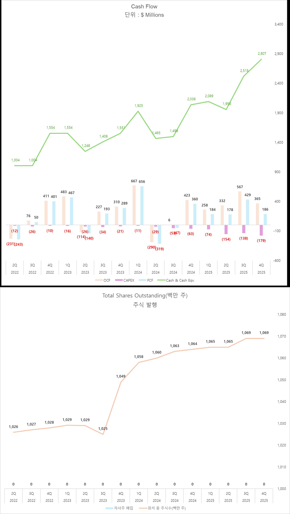
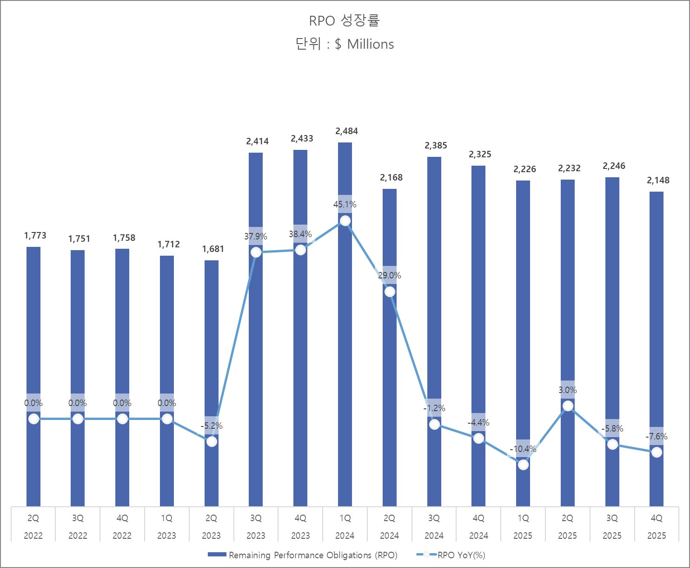
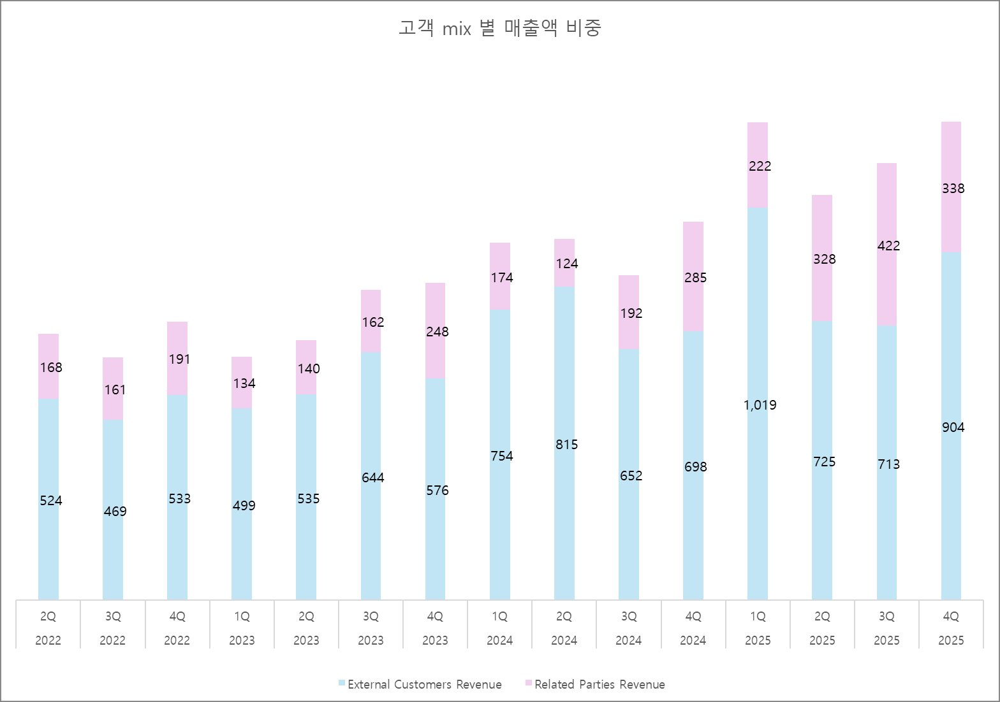
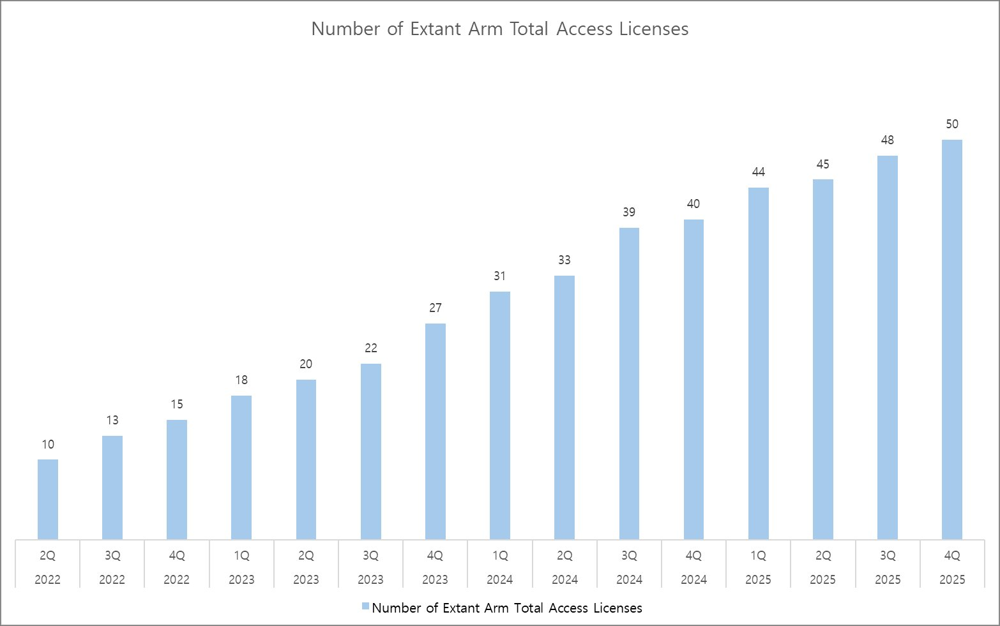
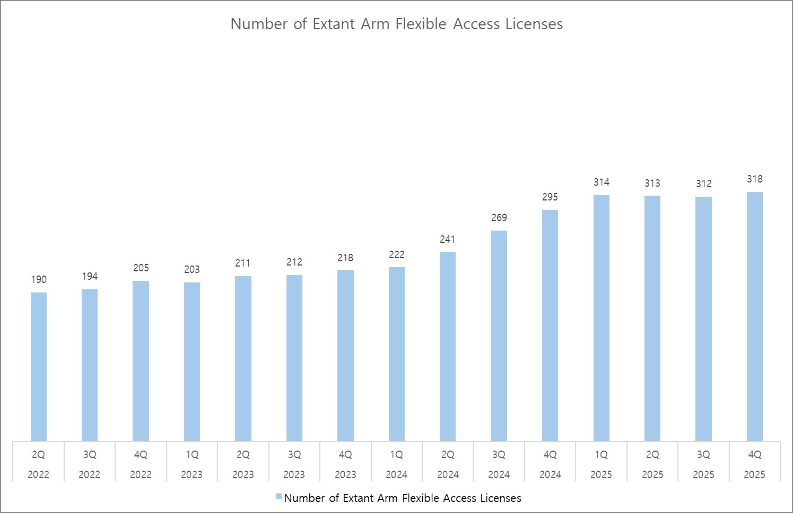
ARM 도쿄 IR 브리핑 핵심 (2026.03, Ian Thornton VP IR)
ARM 최초 자체 칩 발표 직후 도쿄에서 진행된 투자자 브리핑. FY31(2031.03) 5개년 타겟 최초 공개.
FY31 재무 타겟
Chip 사업 가시성 & 고객 구조
$1B+ 매출 가시성: 향후 2년(FY27+FY28) 합산 $1B 이상의 칩 매출을 확보. FY28부터 본격 매출, FY31까지 exponential ramp.
고객 구조: Meta(리드 파트너), OpenAI, SAP, Cloudflare, SK Telecom, F5 + 비공개 다수. $15B 달성에 Meta·OpenAI만 필요한 것이 아니라 다양한 경로가 존재한다고 강조.
기존 IP 사업과의 관계: 칩 사업은 자체 칩 설계 역량이 없거나 원치 않는 "새로운 고객"을 타겟. AWS/Google/MS는 자체 칩을 자사 DC에만 사용하고 외부 판매하지 않으므로, ARM이 공략하는 것은 이들이 서브하지 않는 시장. 카니발리제이션 없음.
제품 로드맵: AGI CPU 1세대 발표 완료. 2세대는 이미 완성 단계(약 1년 내 출시). 3세대 개발 착수. FY31까지 3개 세대 동시 램프.
FY31 수익 구조: >$9 Non-GAAP EPS
R&D 투자 대부분 이미 반영 → 추가 칩 GP가 영업이익으로 drop-through. 출처: ARM 도쿄 IR (© 2026 Arm)
매출 구성 변화: Licensing + Royalty + AGI CPU → $25B
AGI CPU 매출은 IP/CSS 라이선스·로열티에 추가(additive)되는 구조. 카니발리제이션 없음. FY30에 Cloud AI가 Edge AI를 추월하여 최대 매출원으로 부상.
출처: ARM 도쿄 IR 브리핑 (© 2026 Arm), 추정치 기반. $25B 타겟은 점선으로 표시.
라이선스 매출 성장: 미래 로열티의 선행지표
IPO 시 low single digit 가이던스 → 실제 약 19% CAGR. 오늘의 라이선스 성장이 향후 수년간의 로열티 성장을 견인.
SoftBank 디자인 서비스 매출 포함, 칩 매출 미포함. 출처: ARM 도쿄 IR (© 2026 Arm)
로열티 매출 성장 드라이버 (20% CAGR 전망)
로열티율 상승: v9는 v8 대비 2배, CSS는 추가 2배. 세대별로 약 20%씩 추가 상승(연간 신세대 출시 → 연 20% 인상).
코어 수 증가: 데이터센터 칩의 코어 수가 연간 약 20% 증가. 현재 출하 중인 칩 대부분 약 100코어. 200, 300, 심지어 500코어 이상의 미래 칩에 대한 가시성 확보. 코어 2배 = 로열티 2배.
계약 기반: FY27~31 전망 로열티 매출의 70% 이상이 이미 계약 체결·로열티율 합의 완료. 도쿄 IR 브리핑 FY31 시점에도 약 60%가 계약 기반. 나머지 40%도 거의 전부 기존 고객의 차세대 계약.
과거 5년 로열티 CAGR 약 14% → 최근 2년 20%+ 가속. 향후 5년 평균 20% 전망 (간헐적 시장 조정 가능).
로열티 매출 성장 추이 및 전망
과거 5년 약 14% CAGR → 향후 5년 20% CAGR 가속. 칩 사업이 로열티 궤적에 material impact 없음(additive).
출처: ARM 도쿄 IR (© 2026 Arm), 추정치 기반
로열티 매출의 계약 기반 비율
전망 로열티 매출의 70% 이상이 이미 계약 체결·로열티율 합의 완료. FY31에도 약 60%가 계약 기반. 나머지 40%도 거의 전부 기존 고객의 차세대 계약.
파랑 = 계약 기반 / 회색 = 미계약. 출처: ARM 도쿄 IR (© 2026 Arm)
고객 세그먼테이션: 누가 AGI CPU를 사고, 누가 안 사는가
ARM의 고객 구조를 정확히 이해하려면 CPU 설계 역량 유무에 따른 세그먼테이션이 핵심이다.
Tier 1 — 자체 설계 역량 보유 (ISA/아키텍처 라이선스): Apple, AWS(Graviton), Google(Axion), Microsoft(Cobalt), Nvidia(Vera). 이들은 ARM ISA만 가져가고 자체 CPU를 설계한다. 로열티율이 가장 낮고(약 1% 전후), CSS나 AGI CPU를 구매할 유인이 거의 없다. Apple이 엄청난 ARM 기반 칩 물량에도 ARM 매출에서 한 자릿수 비중인 이유.
Tier 2 — 자체 설계 일부 보유 (CSS 라이선스): Samsung, MediaTek, Tesla, Renesas 등. ARM이 설계한 코어+서브시스템을 가져가되 차별화 영역(ISP, 모뎀 등)만 자체 설계. 로열티율이 높고(v9 기준 3~5%, CSS 시 최대 10%), ARM 매출의 핵심 성장 동력. Total Access License 50개, Flexible Access License 318개가 이 세그먼트.
Tier 3 — 설계 역량 없음 (AGI CPU 직접 구매): Meta, OpenAI, Cloudflare, SAP, SK Telecom, F5, 네오클라우드(CoreWeave, Lambda, Nebius 등), 엔터프라이즈. 자체 칩 설계팀이 없거나(엔지니어 1,000명+, 예산 $500M 필요) 원하지 않는 기업들. AWS/Google/MS의 커스텀 CPU는 자사 클라우드 내부용일 뿐 외부 판매하지 않으므로, 이 세그먼트에는 "살 수 있는 CPU"가 없었다. ARM AGI CPU의 핵심 타겟.
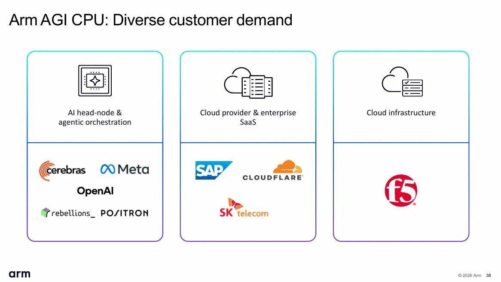
TAM 확대
서버 CPU 시장 $27B→$60B(2030). 에이전틱 AI로 CPU 수요 4배 증가 전망. AGI CPU 단독 $15B(2031) 목표.
데이터센터 ARM 전환
AWS Graviton, Google Axion, MS Cobalt 등 하이퍼스케일러가 이미 ARM 기반 커스텀 CPU를 대규모 도입. x86 대비 40% 비용 효율성.
엣지 & IoT 성장
자동차, 웨어러블, AR 헤드셋 등 모든 성장 엔드마켓이 ARM 기반. 반도체 시장 2020년대 말 $1T 전망.
Physical AI: 자동차 & 로보틱스
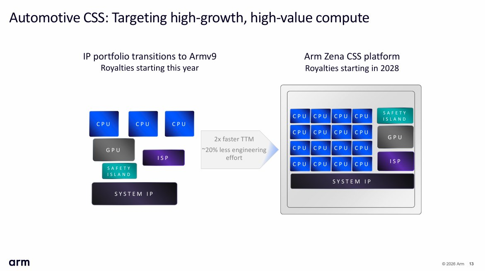
자동차: 거의 모든 고성능 자동차 칩 개발사(Nvidia, Renesas, Tesla, Rivian 등)가 ARM CPU를 사용. 자율주행차의 컴퓨트 수요는 급격히 증가 중 — 한 OEM이 1세대 자율주행차에 433개 ARM 코어를 배치하여 차량당 로열티 $100~$200 발생. 로보택시 시장은 올해 약 10,000대에서 2020년대 말 1,000만대 이상으로 성장 전망. 도쿄 IR 브리핑
로보틱스: 아직 초기 시장이나, 컴퓨트 구성이 자동차와 유사(단일 독립 브레인 + 다수 센서/액추에이터). ARM의 Zena CSS(자동차 SDV용)가 자율주행뿐 아니라 휴머노이드 로봇의 메인 브레인으로도 활용 가능.
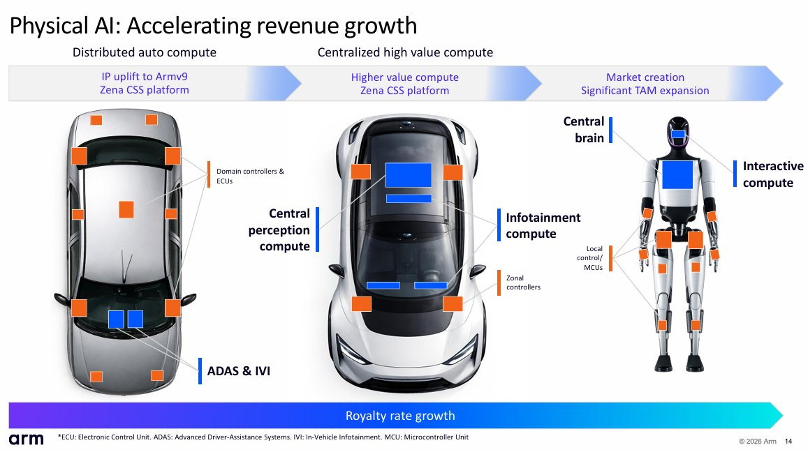
TAM: Physical AI 시장 $25B(현재) → $50B(FY31), 약 2배 성장 전망. ARM v9 + CSS 배치가 확대되면서 차량당·로봇당 로열티가 구조적으로 상승하는 구간.
Edge AI: 스마트폰 & PC 시장 확대
스마트폰: ARM이 이미 100% 시장 점유율을 보유. 핵심 드라이버는 v9 전환 — Android 앱스토어의 AI 지원 앱 중 70%+가 ARM CPU만으로 실행(별도 가속 불필요). 거의 모든 소비자 전자기기가 AI 알고리즘 실행을 위해 v9로 전환할 전망이며, 이는 로열티율 상승(v8→v9 2배)을 구조적으로 견인. 도쿄 IR 브리핑
PC 시장 점유율 확대: Apple은 100% ARM 기반(M 시리즈). 많은 Chromebook이 ARM 기반. Nvidia가 ARM 기반 PC 칩으로 진출 중. Windows on ARM 생태계가 성숙하면서 x86 독점이 점진적으로 침식되는 구간. ARM CEO Rene Haas 본인이 Nvidia에서 Windows on ARM 사업을 직접 관리한 경력.
TAM: Edge AI 시장 $180B(현재) → $250B(FY31), CAGR 약 7%. 시장 성장률은 클라우드보다 낮지만, ARM의 100% 점유율 기반 위에서 v9/CSS 전환에 따른 ASP 상승이 핵심.
Chiplet 표준화: 장기 옵셔널리티
ARM은 30년 전 IP 표준을 만들었듯이, 이제 칩렛 간 표준 인터페이스를 만들려는 initiative를 진행 중이다. 현재 AMD, Intel, Nvidia 모두 독자적(proprietary) 칩렛 인터페이스를 사용하고 있어, 서로 다른 회사의 칩렛을 하나의 패키지에 통합하기 어렵다.
ARM이 추진하는 미래: CPU 칩렛(ARM) + 가속기 칩렛(Nvidia/Rebellions/Cerebras 등) + IO 칩렛을 표준 인터페이스로 연결하여 하나의 패키지에 통합. 이것이 실현되면 AGI CPU의 136코어가 아닌 500~700코어 이상의 멀티칩렛 구성도 가능해진다. 도쿄 IR 브리핑
투자 관점: 단기 매출 기여는 없지만, 칩렛 표준이 ARM 주도로 형성될 경우 "반도체의 스위스" 포지션을 칩렛 레벨에서 재현할 수 있는 구조적 옵셔널리티. 가속기 TAM $1T(FY31)에 대한 "watch this space" 발언의 실체가 여기에 있을 가능성.
라이선스 기반 확대: Total Access License 수가 10→50개(5배), Flexible Access License 수가 190→318개로 꾸준히 증가. ARM 생태계의 저변 확대를 보여주는 긍정적 선행지표.
Related Party 매출 급증: SoftBank 그룹 관련 매출이 FY2025 들어 분기 $222M~$338M 수준으로 급증. Ampere 인수 및 SoftBank AI 인프라 투자와 연관된 거래로 추정. 매출 품질(sustainability) 모니터링 필요.
RPO 감소: 잔여 이행 의무(RPO)가 1Q24 $2,484M 피크 후 4Q25 $2,148M으로 YoY -7.6% 감소. 라이선스 딜 파이프라인의 선행지표로서 모멘텀 둔화 시사.
마진 구조: GPM 97%대로 업계 최고 수준 유지. 다만 AGI CPU 직접 판매가 본격화되면 칩 매출의 GM은 40~50% 수준이므로 블렌디드 마진 하락 불가피 — MS 다운그레이드의 핵심 논점 중 하나.
CAPEX 급등: FY2025 들어 CAPEX % of Sales가 6%→14%대로 급등. 칩 직접 제조를 위한 선행 투자(TSMC 웨이퍼 커밋, 서버 레퍼런스 디자인 등)가 반영된 것으로 추정.
매출 성장: FY2025 연간 $4.0B(YoY +24%). 사상 최초 분기 $1B 돌파(4Q25 $1,242M). 다만 YoY 성장률은 33.7%(1Q25) → 26.3%(4Q25)으로 둔화 추세.
기타 주요 발언
소프트웨어 생태계: ARM 개발자 2,200만 명 이상, 누적 15억+ 시간의 ARM 소프트웨어 개발 투자. v8에 약 $1B, v9에 약 $3B의 자체 소프트웨어 투자. AWS 상위 1,000 고객 중 99%+가 일부 워크로드를 ARM에서 실행.
자동차: 한 OEM이 1세대 자율주행차에 433개 ARM 코어 배치 도쿄 IR 브리핑 → 차량당 로열티 $100~$200 발생. 로보택시 올해 약 10,000대 → 2020년대 말 1,000만대+ 전망.
Edge AI: Android 앱스토어의 AI 지원 앱 중 70%+가 ARM CPU만으로 실행(별도 가속 불필요). v9는 엣지 AI 가속에 필수 → 거의 모든 소비자 전자기기가 v9로 전환 전망.
Chiplet 표준화: 30년 전 IP 표준을 만들었듯이, 이제 칩렛 간 표준 인터페이스를 만들려는 initiative 진행 중. CPU 칩렛(ARM) + 가속기 칩렛(Nvidia/Rebellions 등) + IO 칩렛을 하나의 패키지에 통합하는 미래.
SoftBank/Ampere/Graphcore 관계: AGI CPU는 순수 ARM 이니셔티브로, SoftBank 산하 Ampere(약 1,000명)·Graphcore(약 500명)와는 완전히 별개 프로젝트. 이들이 무엇을 개발 중인지는 별도 발표 예정.
TAL(Total Access License): 상위 50개 고객 중 30개만 구독 라이선스 체결. 나머지 20개도 향후 가입 전망 → 라이선스 매출 성장 여력.
CEO 인터뷰: 스타게이트·OpenAI·애플 (Bloomberg, 2026.04)
스타게이트 프로젝트: 동력을 잃고 있다는 보도에 대해 Haas는 "전혀 우려하지 않는다"고 일축. 스타게이트는 복잡한 프로그램이지만 관련 부정적 보도는 다소 과장(overblown)된 것으로 판단. 소프트뱅크는 최근 OpenAI 라운드에 대규모 투자를 단행했으며, OpenAI의 성장 잠재력은 사실상 무한(unbounded)하고 컴퓨트 자원이 유일한 제약 요인이라고 평가. Bloomberg Technology
애플과 AI 경쟁: 애플이 AI 레이스에서 뒤처졌는지에 대해 "아직 너무 이르다"고 답변. AI 경쟁은 아직 초기 단계에 불과.
AI와 생산성: Arm 내부에서도 AI를 적극 활용하여 제품 설계 속도를 높이고 있으나, 현재 Arm의 최대 제약 요인은 엔지니어 수이며 AI가 이를 완전히 대체하지는 못한 상태. 리더십 회의에서 "X를 하고 싶은데 인력이 부족하다"는 아이디어가 넘치는 상황.
왜 RISC-V가 위험한가
ARM의 핵심 수익원인 라이선스비+로열티를 업계에서는 "ARM Tax"라고 부른다. RISC-V는 오픈소스라서 이 비용이 0원이다.
ARM이 직접 칩을 팔겠다고 선언하면서, 라이선시들이 RISC-V로 헤지할 동기가 더 커졌다.
이미 움직이고 있는 플레이어들
Qualcomm: 2025년 말 RISC-V 고성능 코어 설계사 Ventana Micro Systems 인수. The Register
Tenstorrent (Jim Keller): Ascalon-X 코어가 벤치마크에서 AMD Zen 5, ARM Neoverse V3와 동급 성능 달성 자체 발표 FinancialContent — "RISC-V는 저성능"이라는 인식을 깨는 사건.
Nvidia: RISC-V 지원 시작.
중국: 미국 수출 규제 우회를 위해 RISC-V 서버 칩 개발 활발.
단기적으로는 제한적인 이유
SemiAnalysis(Dylan Patel): "RISC-V가 데이터센터의 중앙 CPU가 되는 건 당분간 일어나지 않을 것." DCD ARM은 CPU 코어뿐 아니라 Network-on-Chip, 메모리 컨트롤러, 물리적 레이아웃까지 통합 제공하는데, RISC-V 생태계는 아직 이런 완성도가 부족하다.
Counterpoint Research: 2029년까지 커스텀 프로세서 기반 AI 서버의 90%가 ARM Counterpoint via Tom's HW, x86+RISC-V 합쳐서 10% 전망.
가장 큰 장벽은 수십 년간 ARM/x86에 최적화된 소프트웨어 자산.
라이선스료를 높이면 → 고객들이 RISC-V로 이탈할 동기 증가
라이선스료를 낮추면 → 수익성 악화
직접 칩을 팔면 → 고객 이탈 + RISC-V 전환 가속
위험하지만, 가만히 있어도 위험한 상황에서 선제적으로 움직인 것이다. RISC-V가 고성능 서버 CPU에서 ARM을 대체하려면 아직 수년이 필요하다는 판단 하에, 그 시간 안에 칩 사업을 궤도에 올리겠다는 계산.
네오클라우드의 CPU 선택 구조
CoreWeave, Lambda, Nebius, Crusoe 등 네오클라우드들은 GPU-first 사업자로, CPU는 주로 Nvidia GPU 시스템에 번들된 것을 사용한다. CoreWeave의 GB200/GB300 인스턴스는 각각 Grace CPU가 내장된 슈퍼칩 구조이며, 2H26부터는 Vera Rubin NVL72 플랫폼과 Vera CPU 랙을 배치할 계획이다. CoreWeave
CoreWeave가 Vera CPU standalone 최초 고객: Jensen Huang이 Bloomberg 인터뷰에서 CoreWeave에 Vera CPU를 standalone으로 최초 제공한다고 발표. Nvidia가 $2B 추가 투자하면서 지분을 9%로 확대. "standalone CPU 배치 고객이 더 많아질 것"이라고 시사. DCD Tom's Hardware
네오클라우드 시장 규모: Forrester 기준 2026년 $20B, Mordor Intelligence 기준 $35B. GPUaaS 시장은 2032년까지 $50B 전망(Fortune Business Insights). CoreWeave만 $5B+ 연매출. Nirvana Labs
ARM AGI CPU의 실질 TAM 리스크
ARM이 제시하는 $100B+ 데이터센터 CPU TAM은 전체 시장 규모이지만, 실질적으로 AGI CPU가 공략할 수 있는 시장은 이보다 좁을 수 있다:
Tier 1(빅테크)은 이탈 불가: AWS/Google/MS/Apple은 자체 CPU를 보유하며 AGI CPU를 구매할 유인이 없다. 이들이 DC CPU 시장의 상당 부분을 차지.
Nvidia 진영 lock-in: 네오클라우드들은 Nvidia GPU 생태계에 깊이 종속되어 있어, CPU도 Nvidia Vera를 선택할 가능성이 높다. CoreWeave는 Nvidia가 9% 지분을 보유한 사실상의 전략적 파트너. Nvidia는 GPU-CPU-DPU-네트워킹까지 풀스택으로 묶어 판매하는 전략.
x86 레거시 수요: Google-Intel IPU 파트너십이 보여주듯, 호환성·레거시 이유로 x86(Xeon/EPYC)을 유지하는 수요도 상당. 에이전틱 워크로드의 "대부분이 아직 x86에서 실행"(Lisa Su).
Nvidia 풀스택 번들 구조: Vera Rubin NVL72 Pod(72 Rubin GPU + 36 Vera CPU)를 통째로 구매하면 CPU가 이미 포함되어 있어 AGI CPU를 별도로 살 이유가 없다. AI 클라우드 CAPEX의 대부분이 이 풀스택 구매로 흘러가는 현 구조에서, AGI CPU의 실질 기회는 제한적일 수 있다.
그럼에도 AGI CPU가 공략할 수 있는 시장: Nvidia GPU가 아닌 커스텀 ASIC 가속기를 사용하는 기업들. 이들에게는 Vera가 번들로 오지 않으므로, 가속기와 연결할 호스트 CPU를 별도 조달해야 한다. 이때 선택지는 x86(Intel Xeon, AMD EPYC) vs ARM AGI CPU가 된다.
• Meta — 자체 MTIA 가속기를 개발·배치 중. AGI CPU의 리드 파트너이자 첫 고객.
• Cerebras — 웨이퍼 스케일 가속기. AGI CPU 파트너로 발표.
• Rebellions, Furiosa — 한국 AI 반도체 스타트업. 자체 가속기를 개발하되 호스트 CPU는 외부 조달.
• Google TPU 생태계 — Axion(자체 ARM CPU)을 보유하고 있으나, 동시에 Intel Xeon도 병행 사용. ARM AGI CPU가 추가 선택지가 될 수 있는 영역.
• 향후 Broadcom/Marvell ASIC 고객 — OpenAI(Broadcom ASIC 2027+), 기타 하이퍼스케일러가 커스텀 ASIC으로 전환 시, Nvidia Vera 번들에서 벗어나면서 호스트 CPU 선택이 열림.
결론: ARM AGI CPU의 실질 TAM은 "non-Nvidia 가속기 + 호스트 CPU 별도 조달" 세그먼트로 좁혀진다. 이 시장에서 x86(Xeon/EPYC)과의 경쟁이 핵심이며, ARM의 와트당 성능 우위와 Neoverse 생태계 호환성이 차별화 포인트. $15B 타겟 대비 이 시장이 실질적으로 얼마나 되는지는 커스텀 ASIC 전환 속도에 달려 있다.
Intel-Google IPU 파트너십 (2026.04.09 발표)
Google과 Intel이 멀티이어 AI 인프라 협력을 확대 발표. 두 가지 축으로 구성:
1) Xeon 6 지속 배치: Google Cloud가 Intel Xeon 6 프로세서를 C4/N4 인스턴스에 배치하여 AI 학습 조정, 저지연 추론, 범용 컴퓨팅 워크로드 처리. Google은 약 30년 전부터 Intel 프로세서를 사용해온 관계이며, 자체 ARM 기반 Axion CPU를 보유하고 있지만 x86 수요도 병행 유지. CNBC
2) 커스텀 IPU 공동 개발 확대: 2022년부터 진행 중인 IPU(Infrastructure Processing Unit) 공동 개발을 확대. IPU는 네트워킹·스토리지·보안 기능을 호스트 CPU에서 오프로드하는 프로그래머블 ASIC 가속기로, Nvidia BlueField DPU와 유사한 역할. CPU가 인프라 태스크에서 해방되어 AI 워크로드에 전념할 수 있도록 하는 구조. Google은 이미 2022년 Intel과 개발한 Mount Evans IPU를 C3 인스턴스에 배치한 바 있으며, 이번 확대는 에이전틱 AI 시대의 인프라 복잡성 증가에 대응하는 것. Tom's Hardware
마진 딜루션
IP 라이선스 GM 96~97% vs 칩 판매 GM 40~50%. 직접 칩 판매 비중이 커질수록 블렌디드 마진 하락 불가피.
라이선시 갈등
설계도 원본을 가진 회사가 같은 시장에서 경쟁하는 구조. Apple, Qualcomm 등이 RISC-V 대안을 더 적극 검토할 수 있음.
TSMC N3 캐파 제약
TSMC N3 공정 캐파가 타이트하여 단기 실적 서프라이즈도 어려움.
ARM China 리스크
매출의 약 24% 차지하는 ARM China는 실질 독립 기업(ARM 지분 4.8%). 미중 갈등 시 리스크 요인.
밸류에이션
FY2025 기준 P/E 약 94x (MS 추정치 FY26e). AI 프리미엄이 어디까지 정당화되는지 모니터링 필요.
지정학 리스크 심화
반도체가 지정학적 도구로 부상하면서 CEO 역할의 복잡도가 극적으로 증가. 미국 AI 차르(David Sacks) 임명, 영국도 관련 역량 확충 중. 정부들이 반도체 스택 내 실제 레버리지 포인트를 점점 더 잘 이해하고 있다고 평가. Bloomberg
유럽 반도체 생태계 취약
ASML CEO의 "유럽은 미국·중국과 경쟁할 능력이 없다"는 발언에 Haas도 대체로 동의. 핵심은 대기업이 아니라 스타트업 생태계 — 초기 자금 조달, 인재 유치, 기업가 정신 인프라가 부족. 인재 부족이 아닌 자본 조직화의 실패. Bloomberg